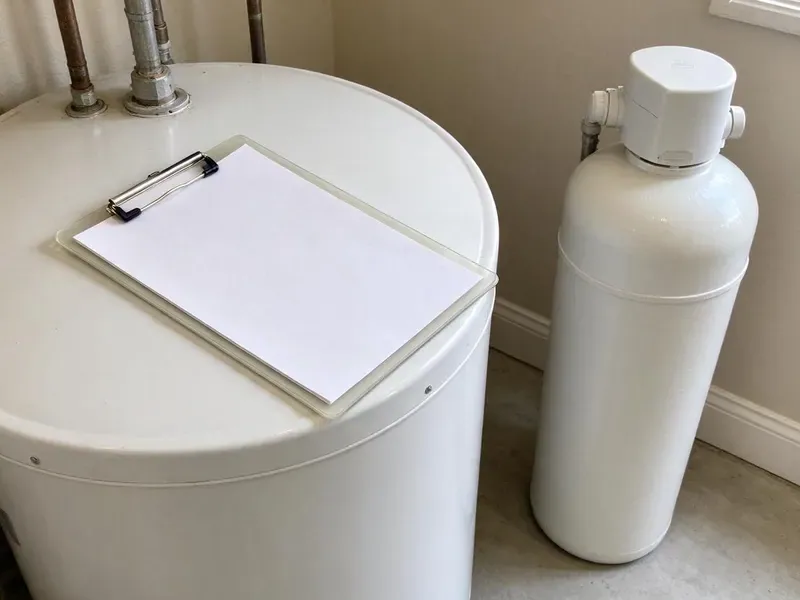
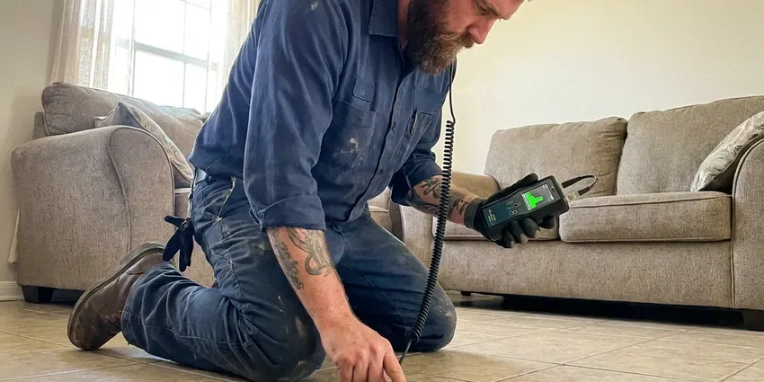

Walls Waterproofing in Mandan, ND
Heavy rain finds every weak joint in a foundation. We waterproof walls across Mandan, ND so it stops there.
- RedGard, Kerdi and Hydro Ban Membranes
- Licensed and Insured
- Interior Drain Tile Systems
- Written Quotes Before Work Starts

Get Your Walls Sealed in Mandan, ND.
One inspection shows whether you need crack injection, drain tile or an exterior membrane, and we put it in writing.
Wet Walls Fixed at the Source in Mandan, ND
HPN Plumbing combines plumbing repair and waterproofing, so you pay one crew instead of two. A failed shower pan, a pinhole leak in a copper line inside the wall, or a sprinkler soaking the block foundation all show up as the same wet spot on the drywall. We fix the cause, then seal the wall.
Our expertise includes:
- Interior masonry coatings for block and poured walls
- Interior drain tile along the footing
- Exterior foundation membrane application

Additional Plumbing Maintenance Services in Mandan, ND
Our maintenance and specialty plumbing services in Mandan, ND catch small problems before they become emergencies.


Customers
Why Choose HPN Plumbing for Walls Waterproofing in Mandan, ND?
Moisture meters and a thermal camera let us map the wet area before we cut into a single wall. That keeps the demolition to the section that is actually wet, usually a band of drywall a couple of feet off the slab, and keeps the repair bill smaller. Less mess, too.
- Local Knowledge, We know how North Dakota homes are built, and how wet soil and heavy storms work on their foundations.
- Soil and Water Table, We check grading, downspouts and the water table before choosing a fix.
- Home Protection, Dry walls keep mold out of the framing and protect your home's value.
Citywide Coverage
Anywhere in Mandan, ND, the same wall waterproofing service is available to you. We handle single-family homes, duplexes and small rental properties, and landlords with several units can bundle inspections into one visit to save on scheduling. A single call sets it up.
Experienced Team
Our waterproofing techs are licensed plumbers first, which is the reason they can fix the pipe behind a wet wall instead of just sealing over it. They train on new membrane and injection products as manufacturers release them. Most have ten years or more in the trade.
Safety-First Approach
Safety on site starts with the electrical panel. Before we touch a wet wall we shut off power to any outlets or circuits in it, test with a non-contact tester, and only then open the drywall. We never guess about wet wiring.
Trusted Certified Mandan Plumbing Services Professionals
At HPN Plumbing, we are proud to offer certified plumbing services throughout Mandan, ND. Those papers on the wall mean something. Our plumbers hold recognized industry credentials, and they follow strict safety and quality rules on every repair, installation and maintenance call we run.
Call Us Now PHCC Plumbing Contractor Recognition
PHCC Plumbing Contractor Recognition Better Business Bureau (BBB) Accreditation
Better Business Bureau (BBB) Accreditation Angi Certified Pro
Angi Certified Pro ISO 9001 Quality Management Certification
ISO 9001 Quality Management CertificationFoundation, Shower and Block Wall Waterproofing in Mandan, ND
Plumbing Leak Behind Walls in Mandan
A drip from a shower valve cartridge, a sweated copper stub or a loose drain slip nut can soak a wall cavity for months before paint bubbles. We find it with a moisture meter, a thermal camera that shows the cool wet spot, and a pressure test on the supply lines. Then we cut a clean access hole. The bad fitting or section of pipe gets replaced. Wet insulation comes out, and fans dry the cavity before we close it up.

Sump Pump Installation and Repair in Mandan, ND
A sump pump is the part of an interior system that actually moves the water. We set a lidded basin below slab level, install a cast iron pump sized for the inflow, and add a battery backup or water-powered backup for the night the power goes out during a storm. Check valves matter. Without one, the discharge water runs back into the pit and the pump short-cycles. The discharge line gets routed at least 10 feet from the house.
Waterproofing for Older Homes in Mandan, ND
Houses built before modern drainage rules often have no footing drain at all, or a clay tile drain that collapsed decades ago. Older homes may still have galvanized supply lines or cast iron drains, which can corrode and restrict flow with age. Fieldstone and old brick foundations need breathable products. A rigid coating on soft brick traps moisture and makes the face spall off over a few seasons, so we use lime-compatible or vapor-open coatings and pair them with a new interior drain. Old mortar joints get repointed first.
Drainage System Integration in Mandan, ND
Water has to go somewhere once a wall is sealed. Exterior footing drains, interior drain tile and surface French drains all do the same job at different depths. We match the drain to where the water comes from, which might be a high water table, a yard that slopes toward the house, or a downspout emptying right at the foundation. Downspouts get extended at least four feet out.
Cost-Effective Waterproofing Solutions in Mandan, ND
Not every wet wall needs a $15,000 excavation. Sometimes the fix is a downspout extension and regrading the soil so it slopes away from the house, a drop of about six inches in the first ten feet, and that costs a few hundred dollars. We start with the cheapest fix that will actually work. You get the options in writing, side by side.
Below-Grade and Basement Wall Waterproofing in Mandan
Older homes may still have galvanized supply lines or cast iron drains, which can corrode and restrict flow with age. Any wall below grade sits in soil that gets saturated after heavy rain or snowmelt, and that water pushes against the wall with real hydrostatic pressure. We inject cracks, coat the wall inside or out, and add drain tile wherever water collects at the footing. A sump goes in if groundwater sits high. Some basements never need a sump.
Foundation Crack Repair & Sealing in Mandan
Hairline cracks in poured concrete walls leak more water than their size suggests. We inject them with low-pressure polyurethane foam, which expands to fill the crack from the inside face to the soil side, or with epoxy when the crack also needs structural bonding. Horizontal cracks are different. A horizontal crack often signals soil pressure pushing the wall in, so we check for movement with a level before we seal anything. Vertical cracks are usually a one-visit job.

Crawl Space Encapsulation in Mandan
Encapsulation seals the whole crawl space, walls and floor, with a reinforced poly liner. We run 12 to 20 mil liner up the walls, tape every seam, seal around piers and pipe penetrations, and often add a dehumidifier to keep relative humidity below 60 percent. Long, bitterly cold winters are the defining climate stress in North Dakota, putting heavy demand on water heaters and heating systems. The joists stop rotting. Drier air under the floor also cuts down on the musty smell in the house.
Local Wall Waterproofing in Mandan, ND
Local crews matter for this work. We can stop back after the first big rain to confirm the wall stayed dry, check the sump and look at the drain tile cleanout, since our shop is close to most of Mandan, ND. Follow-up visits are part of the job.
Our techs have worked in the basements and crawl spaces of Mandan for years, so they know which house styles tend to leak where. A split-level with a half-buried family room fails differently than a full basement with poured walls. Knowing that history makes the diagnosis faster.
HPN Plumbing at a Glance
- Licensed and insured plumbers serving Mandan, ND
- 24/7 emergency service with same-day scheduling
- Upfront, flat-rate pricing before work begins
- 4.9-star rated by 408+ North Dakota customers
Mandan Map
Mandan Information
- Population
- 24,586
- Area codes
- Local
- Service area
- Mandan and communities within 40 miles
- Nearby
- Bismarck, Dickinson, Minot, Jamestown
Sprinklers, storms and daily showers all push water into block, stucco and drywall, so Mandan, ND homes need walls sealed at the source.
Expert Services
Call HPN Plumbing for honest, reliable plumbing from people who know the trade in Mandan, ND.
Our Specialized Plumbing Services in Mandan, ND
At HPN Plumbing, we handle the full list of plumbing services across Mandan, ND. From leak detection to full system installs, our team works fast and charges fair prices on homes and commercial properties alike. Explore our core services below:


From Damp Wall to Sealed Wall in Mandan, ND
Here is the order we follow, from your first call to the last moisture check.
Request a Quote
Call (701) 403-1348 or use the online form. We set a time that works for you for the on-site visit.
Detailed Inspection
Our tech tracks down where the water is coming from and checks how far the damage reaches. You get the findings in plain terms.
Custom Solution
We build the plan around your foundation and the leak, and pick materials that suit the wall.
Frequently Asked Questions About Walls Waterproofing in Mandan
Most jobs fall between $3,000 for interior crack sealing and $15,000 or more for exterior excavation with new footing drains. The size of the wall, how wet it gets, the method we pick and how easy the wall is to reach all move the number. Access matters most. You get a written quote before any work starts.
Yes. Our installs carry a written warranty on labor and materials, and the length depends on the system we put in, while many membranes and injection resins also come with a manufacturer warranty. Your service agreement lists the exact coverage.
Damp proofing is usually a thin spray-on asphalt coat. It slows soil moisture but cannot hold back water under hydrostatic pressure. Waterproofing uses thicker membranes, drainage boards and footing drains rated to stop liquid water, and that is what a basement sitting in wet soil or a high water table calls for.
Most systems we install should go 20 to 30 years or longer. Life span comes down to how it was installed, what method was used and what the soil around the house is like. Sump pumps wear out sooner. Plan on a new pump every seven to ten years.
A shower wall job usually takes two to four days from demolition to finished membrane, including the drying time between coats. Exterior block sealing often wraps up in a day. Bigger foundation jobs take several days, sometimes more if it rains.
Often, but not always. A remodel that moves the valve, changes the drain location or alters supply piping usually needs a permit, while replacing a failed membrane on the existing layout may not. We look up your local requirements and get the permit if one is required.
Look low on the wall first. Damp patches, a musty smell, mold on the bottom of the drywall, a white powder on block or brick called efflorescence, and puddles after rain all point to water coming through. Bowing walls and stair-step cracks need a closer look too.
Crack repairs take a few hours. Interior drain tile usually takes one to three days, and a full exterior dig around the whole house can run three to seven days or more depending on the weather and the depth of the footing. Your timeline comes with the quote.
What Our Customers Say About Our Plumbing Experts

Monica A.
Our water bill nearly doubled in one month with no change in how we used water. The tech checked the meter, heard the leak under the hallway with his equipment, and opened a hole about a foot square. Fixed the same day.
Slab Leak Repair · Bismarck, ND
Nathan E.
Our tankless heater kept throwing an error code and shutting off mid shower. The tech flushed the heat exchanger, which was full of scale, and replaced a bad flow sensor. Hot water has been steady for half a year now.
Water Heater Repair · Jamestown, ND
Rachel N.
Hard water was leaving white crust on every faucet and our dishwasher was struggling. The tech tested the water, recommended a softener sized for a family of five, and installed it with a bypass valve in one afternoon. The spots on our glasses are gone.
Water Softener · Bismarck, NDTyler J.
We bought a taller comfort height toilet for my dad, who just had knee surgery. The plumber pulled the old one, found the flange was cracked, and replaced it before setting the new bowl. Took about two hours.
Toilet Installation · Minot, NDCarlos V.
Our house still had galvanized pipe, and upstairs the shower was a trickle. The crew repiped everything in PEX over three days and patched every drywall hole before they left. The pressure difference is night and day.
Repiping · Bismarck, NDEmily R.
The shutoff valve under our kitchen sink snapped off in my hand on a Sunday morning. HPN Plumbing had someone out by early afternoon. He replaced both angle stops with quarter turn valves and showed me where our main shutoff was, which I honestly did not know.
Plumbing Repair · Dickinson, ND